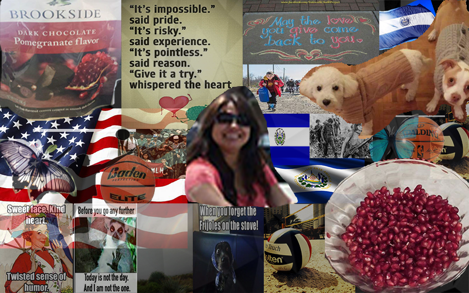

Layered Subject Portrait
Reflection Paragraph
There were many images that I chose for this project that all have some significance in the subject’s life. From the images of her dogs, to pictures that show her sense of humor. There are a few images in the portrait that have flags, showing her ethnicity, or images of war and crossing the border to America to show what she went through in El Salvador during the civil war, and her journey to a new life. There are multiple images of basketballs and volleyballs to show her interest in sports and pomegranates to show her favorite food. Hidden in the portrait are also two butterflies that represent her deep love for beauty and the freedom that she associated with the insect.
Reflection Screenshot

Salvadoran War Essay